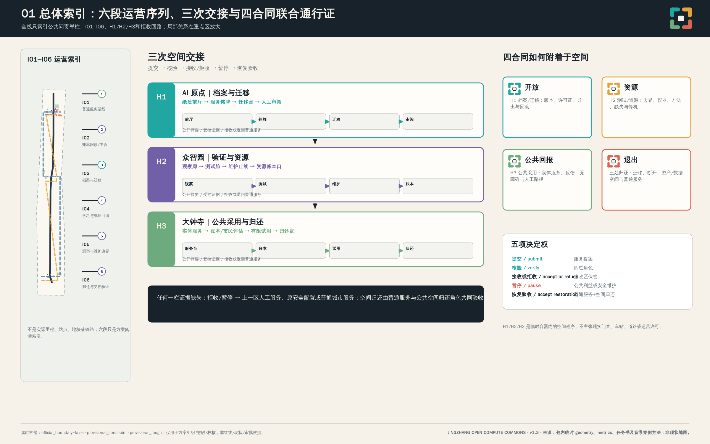
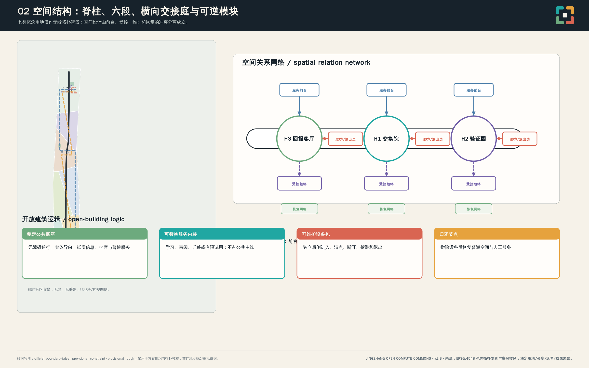
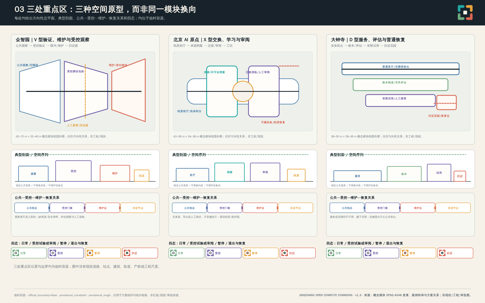
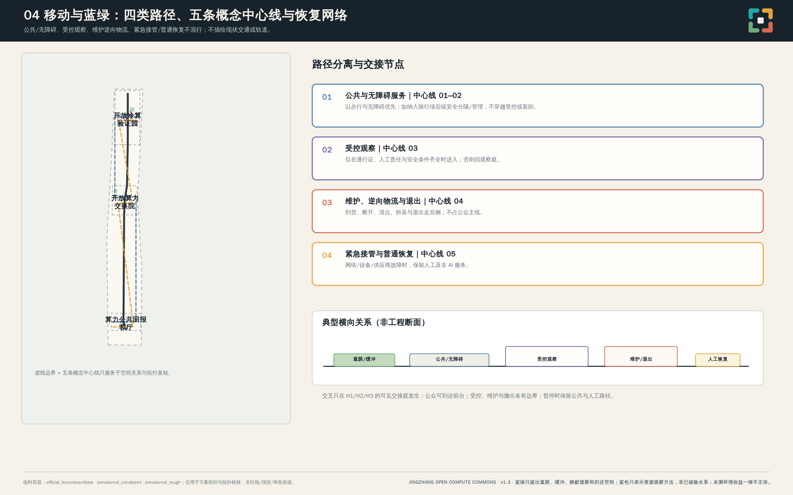
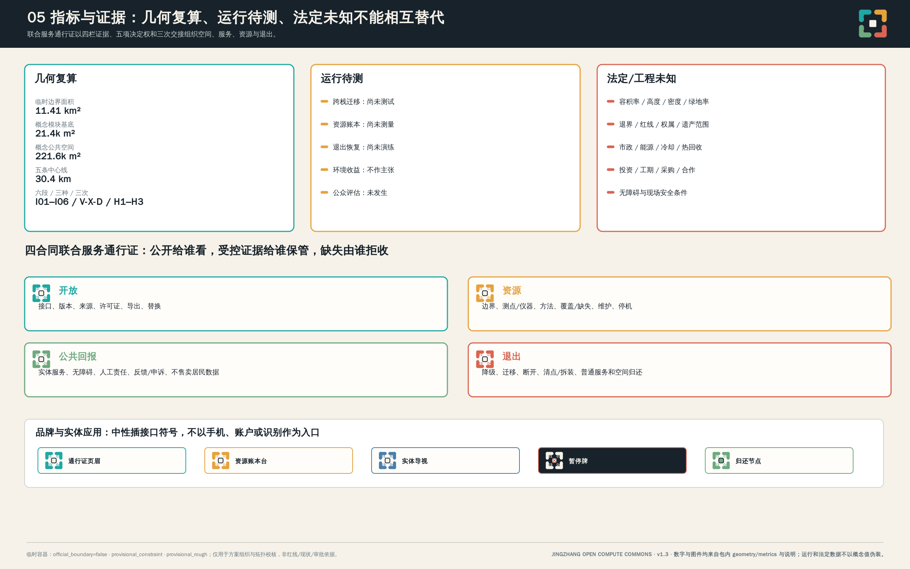

京张开放算力公地
以开放、资源、公共回报、退出四项算力合同组织三区两翼，提出可接入、可迁移、可核算、可退役且保留普通城市服务的京张开放算力公地。
京张开放算力公地
让城市算力可接入、可迁移、可核算、可退役，并持续产生公共回报。 Make urban compute connectable, portable, accountable, and retireable, while returning measurable public value.
本方案是正式征集阶段的专业设计建议，不是已建成、已测量、已招采或已获许可的实施项目，且不主张得到任何官方批准。这里的“合同”是运行治理框架而不是已签署法律文本；“公地”是共享治理和公共使用的空间概念而不是既成土地权属。所有运行阈值、能力、环境表现、投资、工期和效益均为待验证对象。未进行现场踏勘、仪器测量、仿真、供应商测试、用户测试或人类专业评审。 来源 来源
设计依据与资料清单
本方案先判断证据边界，再组织设计。正式可用材料包括征集公告、任务书、城市设计与控规程序相关公开规范，以及用地分类指南；这些材料说明工作范围、提交深度和表达边界，却不提供本项目的法定红线、地块权属、建筑测绘、市政容量或工程条件。背景案例只贡献可迁移的治理方法：例如版本化兼容记录、公共账本、资源计量和可测试退出包，不被升级为北京事实、法规或合作。 来源 来源 来源
资料层级决定写法。官方公告和任务书用于任务回应；临时边界只用于方案组织、拓扑校核和低对比图示；国际案例只用于方法比照。我们未使用 OSM、新闻截图、文本四至或包围盒替代官方几何，也未下载或复用外部影像、地图、品牌或人物素材。源登记保留发布者、链接、日期、检索方式、覆盖范围、许可、转换和局限性，使评审能区分“引用的公开事实”“借鉴的方法”和“仍未知的项目条件”。 来源 来源
《建筑工程设计文件编制深度规定（2016年版）》的官方文件尚未取得；仓库将其登记为 source_status=needs_official_file、reference_fetch_status=missing_source_url，且并非 formal 强制标准。因此本方案只能把它记录为建筑专业深化资料缺口和后续取证任务，不能声称已正式响应，也不以《城市设计管理办法》、其他标准、镜像或方向性图纸冒充其来源。 标准 深度
设计判断是：城市 AI 的质量不以设备规模或自动化程度衡量，而以服务是否能说明如何接入、消耗什么、给谁带来可审计回报、以及如何停止并恢复普通服务来衡量。四项合同因此成为一张完整准入单：缺少版本导出、资源账本、人工回退或退出手册的服务，不能进入公共空间或扩大部署。后续专业工作需补齐官方几何、现状调查、遗产与产权、市政机电、无障碍、数据保护和采购审查。 标准 深度

案例转译：从可核验机制到京张动作
v1.3 研究十一个国际/国内案例、标准与方法单元，并把它们限定为“机制提示—本地条件—失败去向”的比较工具，完整矩阵见 report/narrative.md。铁路案例促成“总体索引＋分段放大＋少数交接节点”，而非把长场地缩成一条景观带；开放建筑与可逆性案例促成“稳定公共底座—可替换内装—可维护设备包”，而非模仿任何项目外观；公共 AI 和退出案例促成“公众摘要—受控证据—资料缺失/拒收”三层记录，而非把海外规则写成北京制度。任何场地可达性、遗产、产权、市政、数据保护、采购或运维条件若未在后续取得，就应回退为普通服务、既有安全配置或专业研究，不能因案例存在而部署。 来源 来源 来源
三层范围工作框架
三层范围被用作工作深度，而不是在资料缺失时擅自制造法定层级。统筹研究范围讨论京张协同连接、中关村创新生态和公共服务连续性；总体设计范围把四合同落到更新、慢行、公共界面和基础设施的关系；重点区域则以三个不同角色检验空间、责任和退出的可执行性。三层之间通过“服务包—资源账本—公共界面—退出包”传递，而不是靠一条新的实体数据中心走廊串联。 来源 深度
当前 upstream/main 未提供可信官方多边形，故提交的总体范围和三处重点区均明确为 official_boundary=false、geometry_role=provisional_constraint、boundary_precision=provisional_rough。它们可支持临时用地分区的无缝拓扑检查和图面关系表达，不能支持官方红线、精确场地面积、法定控规、道路红线、权属结论、工程可行性或获批实施表述。官方图形到位后，九个 GeoJSON 图层、全部面积和比例、路径长度、图纸、HTML、PDF及文字中的空间关系均须重算。 空间数据 空间数据
为使不确定性可见，图中临时边界始终采用低对比虚线，边界外的铁路、道路、站点和河道不作为本方案已核验的现状要素。三处重点区只表示公告所述名称、顺序和临时面积约束的方向性容器；众智园、北京 AI 原点与大钟寺的专业策略可以讨论，但不把粗略坐标解释为土地、车站、道路或建筑的精确位置。 来源 深度

统筹研究范围产业与未来城市研究
京张开放算力公地的总体判断是：铁路提供的不是可复制的符号，而是一种兼容基础设施的伦理——接口可对接，转换可保持服务，维护和归还必须被看见。中关村创新文化在这里被译为开源工具、可复现方法和可追责责任；AI 文化不以无摩擦自动化为目标，而以人可以理解、选择、拒绝并恢复普通服务为底线。原始身份以接口、接点、可插拔模块、热与资源流、公共账本和迁移闸门构成，避免借用已被同侪占用的“线”式叙事。 来源 深度
品牌主名为“京张开放算力公地｜JINGZHANG OPEN COMPUTE COMMONS”。v1.3 已将语言中性的核心符号落实为四个不闭合的插接角与一个可替换中心接点：四个开口依次编码开放、资源、公共回报、退出，而非铁路、机构或公司标志。图 05、A3 方案册与 A0 展板同时给出无文字符号、中文组合、英文组合、单色、高对比和低墨量版；同一符号进入服务通行证、资源账本台、实体导视和归还节点。深石墨为文字底色，冷青绿、琥珀、绿色、暖砖分别配合四合同；形状、编号和文字始终与颜色并用。仅使用本地系统字体，不分发外部字体。 来源 深度
这套识别系统把方案压缩为一条可被检验的记忆句：四栏证据、五项决定权、三次空间交接。它指向联合通行证的四个证据栏、提交／核验／拒收／暂停／恢复验收五项决定权，以及众智园—AI 原点—大钟寺三次空间交接；它不是既有制度或任何现实主体的授权。 深度 深度
“三区两翼”形成有拒收权的交接闭环：众智园是开放冷算验证园，处理多供应商接口、边缘计算、机器人互操作、能热噪记录和停机，并且只输出受控验证过的服务包与证据包；北京 AI 原点是开放算力交换院，处理研究转化、开源工具、共享排程、迁移演练、许可与人工审阅，并且只接受可导出、权利边界清楚的包；大钟寺是算力公共回报客厅，处理公共服务采用、AI 原生商业界面、人工回退、公共账本与市民评估，并且只接受人工路径、账本与退出包均可读的有限公共评估。跨区转移的是可审计服务包，不是未经说明的数据、设备或公众；不合格包应被拒收、退回受控验证或保留普通服务。中关村科技服务翼承担标准、知识产权、合规、采购、金融、开源治理与国际合作的前置服务，且不得自行批准其服务对象；小月河场景赋能翼只在前三处交接证据齐备后承担有限、可撤回的微气候、机器人、公共空间运营和边缘基础设施观察。 标准 深度
北纬社区、未来科学城、怀柔科学城、北京经济技术开发区及京津冀在本方案中仅作为可交换的概念接口对象：它们可在未来使用相同通行证比较可迁移性、资源方法、公共回报和退出材料；这不表示任何区域、机构或主体已同意合作、采购、部署或接收服务。 来源 深度
| 未来可比较的材料格式 | 交接内容 | 不能据此主张 |
|---|---|---|
| 可迁移服务包 | 接口、版本、许可证、导出与替换记录 | 真实部署、跨区传输或接收承诺 |
| 资源方法包 | 采样方法、覆盖／缺失、维护与停机记录 | 能源、热、冷、水或噪声绩效 |
| 公共服务包 | 受益对象、非 AI 等效、无障碍、人工责任与申诉 | 个人数据交换、画像或资格自动决定 |
| 退出恢复包 | 迁移、断开、资产清点、普通服务与空间归还验收 | 已签署合作、采购或工程实施 |
该表是未来可比较材料的格式，不是伙伴关系地图、运输线路或区域部署清单。 深度
国际背景比照被严格限定：AI Verify启发“测试加过程检查加报告”，OCP 启发版本化接口证据，EuroHPC启发访问与分配后复核，LUMI 启发任何热回报必须有生产者—接收者—交接—运营者与计量方法，阿姆斯特丹启发公共登记，DPGA启发公共价值门槛，OSI 启发来源与导出包，DWP启发可逆退出。这些均不是北京的事实或认证。 来源 来源 来源
总体设计范围城市更新与控规深度城市设计
总体设计范围采取“一脊、四账、三院、两翼”的空间动作。一脊是京张铁路遗址公园的公共问责与体验脊柱：它展示服务从何而来、消耗什么、回报什么、谁负责及如何停止，不被设计为推测性数据中心走廊。四账是接口档案、资源账本、公共回报清单和退出恢复手册；三院是验证园、交换院和公共回报客厅；两翼分别将制度服务与有限实景测试接入其中。空间中的每一个技术机制必须有载体、受影响使用者、责任角色、进入前提、拟议可测指标、停止条件和普通城市回退。 标准 深度
四合同不是四个独立主题，而是同一服务的共同准入条件。开放合同要求可审计接口、数据与服务导出、模型/设备可迁移、供应商替换、版本与来源记录；资源合同要求能源、热、冷、水、噪声、工时、维护、数据保留、衰减和停机方式可被记录；公共回报合同要求共享算力、教育、无障碍服务、公共空间或微气候方法、可复现测试结果，并明确不以居民数据出售或利用为商业模式；退出合同要求降级、迁移、断开、移除、普通空间恢复和非 AI 服务常驻。任一缺失即不得进入公共使用或扩展。 来源 来源 来源
因此每项拟议服务均需携带一张版本化的“服务通行证”：接口／导出与来源、资源账本与方法、公共回报与人工路径、退出与恢复分别成栏，并记录准入、拒绝、暂停与回退决定。它不是现有行政许可或法律合同，而是未来可审计的联合准入单；任一栏失效，服务不得跨区、进入公共空间或扩大。通行证及其交接清单、导出包完整性核对、人工连续性确认与退回记录，构成后续专业复核的最小证据产物。 来源 来源 深度
三次空间交接：把通行证变成可进入的门槛
H1 位于北京 AI 原点，是“可打印服务铭牌—迁移演练桌—人工审阅室”的档案/迁移交接：开放栏必须同时给出公众摘要、受控证据包、导出范围与不可导出理由；缺少许可证、版本、人工路径或责任字段，就在前厅拒收并退回普通咨询、纸质、电话或原安全配置。H2 位于众智园，是“观察廊—受控测试舱—维护止线—资源账本口”的测试/资源交接：资源栏必须给出边界、测点/仪器、方法、覆盖/缺失、维护/校准和停机权；没有这些资料只可维持观察与人工巡检，不能主张环境收益。H3 位于大钟寺，是“实体服务台—账本阅读与市民评估—有限试用—归还庭”的公共采用/归还交接：公共回报和退出栏须同时可读，普通服务与公共空间归还角色共同验收后才解除占用。三处均有纸质/大字/人工可解释的状态牌，受控侧保留证据与维护资料，公众不因未持手机、账户或数字身份而被排除。 来源 来源 深度
四合同联合服务通行证：可填写字段与责任链
| 栏位 | 最低填写证据 | 拟议核验与决定 | 不通过的去向 |
|---|---|---|---|
| 开放 | 接口与版本、来源/许可证、导出包、替换演练范围 | 接口核验角色核对；接收区通行证保管角色可拒收 | 退回服务提案人或原安全配置 |
| 资源 | 运行时段、采样方法与覆盖/缺失、维护、降级/停机 | 资源账本角色核对；安全维护角色可暂停 | 停机、人工巡检或不进入受控运行 |
| 公共回报 | 受益对象、非 AI 等效、无障碍与人工责任、争议/申诉 | 公共利益与无障碍角色核对；可暂停公共界面 | 保留纸质、电话、面对面普通服务 |
| 退出 | 迁移、断开、资产清点、数据处置、拆装、空间与普通服务恢复 | 退出恢复角色核对；普通服务与空间归还角色验收 | 设备不进入下一空间，直至普通状态恢复 |
这是一份拟议 RACI，而非既定组织图：服务提案人对提交事实负责（R）；接口、资源、公共利益/无障碍、退出恢复四类核验角色分别负责四栏（R）；接收区通行证保管角色对接收或拒收负责（A）；受影响使用者、维护和数据角色被咨询（C）；可打印账本摘要、恢复状态和拒收理由向公众知会（I）。公共利益或安全维护角色可独立暂停；普通服务与空间归还角色必须共同验收恢复。没有任何现实机构、合作、采购或授权被预设。 深度 深度
项目筛选先检查六项：是否存在非 AI 等效和无障碍物理入口；是否可最小化数据并说明保留/删除；是否有可导出接口、版本和替换演练；是否能在小尺度可逆空间中分开公众、受控、维护和紧急接管；是否有资源方法而非预设环境收益；是否有退出、设备移除和普通服务连续性验收。采购深化应把可导出格式、替换测试、数据保留/删除、资产清点、维护交接和拆装恢复写成可核验条款；在官方控制、许可与责任主体到位前，它们只是拟议条件。 来源 来源 深度
更新不按“新技术替换城市”处理，而按“可维护、可撤除、可复原的公共界面”处理。已确认有公共、遗产、结构或服务价值的要素应优先保留；可核验空间优先适配为学习、人工服务、维护和受控测试；移除只可在法定程序、遗产评估、结构鉴定、产权确认和恢复计划后作为条件性选项；任何新模块必须可盘点、可拆装、可迁移且不得阻断无障碍或普通通行。现有建筑、控制指标和市政条件均未调查，不把图中概念基底误读为既有或批准体量。 空间数据 深度
用地与道路图层是临时功能关系：土地分类词汇来自指南，但不构成控规图则；慢行与接驳线是人工服务、维护和退出路径的设计关系，不构成道路红线或交通工程方案。市政容量、能源容量、冷却需求、废热回收、给排水、消防和荷载均保持未知。拟议资源测试只有在适用许可、校准仪表、人工停机、维护责任和恢复方案完整时才可开始；在此之前不能宣称节能、降温、低噪或热回收效益。 标准 空间数据 深度
重点区域详细设计
三处重点区仍是临时容器，但 v1.3 将每个容器深化为可读的方向性总平面、典型剖面/空间序列、公共—受控—维护—恢复关系和四态状态条。三种空间语法同用一套“稳定公共底座—可替换服务内装—可维护设备包”逻辑：底座承载无障碍通行、实体导向、坐席、纸质信息和普通服务；内装承载可撤回的学习、审阅或试用；设备包只进入独立维护侧。它们不是结构、消防、机电、拆装或审批设计，所有尺度均为现有概念模块组团外廓的 EPSG:4548 复算区间。 来源 来源 空间数据
众智园｜开放冷算验证园（V 型）。方向性平面按“公共观察与接口台—受控测试包络—热噪/安全缓冲—维护与逆向物流边—人工接管/归还庭”排布；公共抵达和无障碍观察路径位于外侧，受控门槛位于中层，设备到货、拆装和撤离只走后侧，且在进入公共评估前必须回到归还庭核验。典型剖面读作观察面—受控面—维护面—恢复面四层，不让观众穿过测试或装卸。既有四个概念模块组团外廓约为 42–70 m × 32–46 m，仅说明方向性空间承载，不是设备、荷载、消防或噪声工程尺寸。日常时观察庭提供纸质状态目录；试验时只显示“待核验/受控试验/已暂停”；暂停或退出时移除设备、封闭受控面并恢复人工维护和普通庭院。H2 缺少校准、覆盖、方法、停机权、维护边界或恢复材料，即停止并退回观察/维护状态。 空间数据 来源 来源
北京 AI 原点｜开放算力交换院（X 型）。方向性平面按“非数字公共前厅和纸质回退—许可/来源档案—迁移演练与人工审阅—学习工坊与可撤设备”围合院落；实体服务台和无障碍入口在最外层，档案与审阅在半受控中层，设备接口在背侧，公众不用穿越审阅/后勤区即可完成咨询、纸质申请或电话转介。典型剖面将前厅、档案环、演练台/工坊和纸质恢复台拆开，H1 在前厅以服务铭牌解释目的、版本、责任、人工路径、当前状态和问题入口。四个概念模块组团外廓约为 42–56 m × 34–38 m，仅是关系尺度；来源、权利、导出或人工服务任一不清，H1 拒收并回退为普通咨询和纸质/电话/面对面流程，不向大钟寺交接。 空间数据 来源 来源
大钟寺｜算力公共回报客厅（D 型）。方向性平面以“实体服务前台—账本阅读/市民评估院—有限试用与人工接管—归还花园和普通服务恢复”由外向内分层；普通客厅、静态导向、人工柜台和无障碍路径始终先于数字试用，维护/撤出在独立后侧，不占公共前台。典型剖面把外层可停留的普通服务、中层可打印账本/问题单、内层可撤回试用和后侧恢复位并置，故障/退出后只保留前两层和归还庭。四个概念模块组团外廓约为 36–50 m × 28–36 m，只是概念参考。H3 的数字界面若信息过期、人工柜台关闭、无障碍路径受阻、反馈无人复核或退出资料不完整，即撤下并回到实体导向、人工问询、纸质/电话服务和普通城市客厅。任何站区关系仍是待相关权利/运营/无障碍核验后的条件性接口。 空间数据 来源 深度
三处均有公共抵达庭、资源方法接口、人工服务台、维护/逆向物流边和归还节点；它们共同使四合同有可见部件而非只存在于图例。京张铁路遗址公园只承担公共问责和体验脊柱：接口铭录台在停用时回到纸质服务目录，资源账本庭回到可打印静态说明，迁移闸门回到人工交接台，归还台回到普通停留与维护空间。它不主张遗址范围、轨道、道路、站点、产权或工程介入已核验。 来源 深度

AI 创新生态、人才画像与 AI+ 场景
本方案采用七类不评分的人本角色：居民、研究人员、初创团队、学生与教师、维护人员、老年或残障使用者、访客。角色只用于识别不同的空间入口、信息格式、人工责任和回退方式，不构建个人档案、行为画像或社会分数。公共 AI 服务不得没有非 AI 等效路径，不得以手机、屏幕、账户或人脸作为唯一入口，不得自动作出资格、医疗、法律、执法或规划决定，也不得进行生物识别监控或持续公共追踪。 来源 深度
三项完整工业验证协议先于任何扩展服务。跨栈可迁移性测试检验导出、版本、许可证、用户权利和人工服务是否一起迁移；能源—热环境预算测试在受控条件下记录功率、温度、噪声和服务状态，拟议停止逻辑包括仪表失效、数据不可信、超出适用安全边界、未预期公共影响或人工回退失效，数值阈值只可在基线、设备资料和专业复核后设定；退出与恢复测试检验网络故障、供应商退出、设备退役或活动关闭后能否恢复普通空间与非 AI 服务。三项协议均未执行，以下证据产物为未来测试要求而非现有结果。 来源 来源 深度
服务包的拟议闭环是：S05 来源／许可诊所形成可读边界，S01 完成可迁移性检验，S02 形成资源方法与账本，S06 或 S10 只能在受控条件下观察，S04、S07、S11 才可提供有限人工在岗服务，S08 与 S12 汇集可打印说明和问题回路，S03 为任何失败、退役或活动结束准备退出。它不是强制线性剧本：每个服务仍须同时回指四合同，任一证据缺失即不得升级。所有 S01–S12 使用同一拟议决定权三元组——开通批准、暂停指令、恢复验收；相应角色必须能独立叫停、确认人工与无障碍路径仍可运营，并记录继续、停留、回退或退出的理由。 来源 来源 深度
场景卡总则：四合同联合决定链
下列 S01—S12 共享同一条可填写、可审计的决定链：服务提案角色提交；开放、资源、公共回报/无障碍、退出/恢复四类角色分别核验其对应字段；接收区通行证保管角色接收或拒收；公共利益或安全维护角色可独立暂停；普通服务与空间归还角色共同验收恢复。每张场景卡的状态都只是“方案级拟议、未部署、未测量、未招采”，不是测试结果、认证、公共服务承诺或人类评审。
每张卡必须同时留下三层信息：面向公众的纸质/大字/人工可解释摘要，面向受控侧的版本、方法、维护、导出或资产证据，以及“资料缺失或拒收”的明确理由。普通服务连续性不是重复的附注：在任何暂停、网络故障、供应商退出或设备撤除时，纸质、电话、面对面、实体导向或人工维护路径仍可用；手机、屏幕、账户或人脸不能成为唯一入口。任何自动资格、医疗、法律、执法或规划决定、生物识别监控、持续追踪、个人画像、社会评分或居民数据商业剥削均不属于场景范围。 来源 来源 深度
三项工业协议的共同规则是“主张—方法/过程检查—证据报告—决定”，而不是“测试即安全”。S01 重点核验导出、目标栈和回滚；S02 重点核验边界、测点/仪器、校准和缺失；S03 重点核验资产、数据、普通服务和公共空间归还的双重验收。受控测试不得自动升级为公共服务，环境方法不得变成环境绩效。 来源 来源 来源
S01｜跨栈可迁移性测试
- 用户／角色：研究人员、初创团队工程师、服务责任人
- 地点或空间类型：开放算力交换院的迁移演练室与验证园兼容测试台
- 目的：检验服务能否在模型、算力平台或设备栈之间迁移，同时保存证据、用户权利与人工服务。
- 最小输入数据：经授权的合成或非敏感测试任务、服务包、接口与数据模式、版本和许可证清单、保留/删除规则、非 AI 服务脚本。
- 输出：迁移记录、导出包完整性检查、版本差异说明与人工路径确认单；不宣称性能结果。
- 拟议通过／退回条件：独立目标栈可重导入，并逐项对照接口、版本、许可证、保留／删除规则、用户权利与非 AI 脚本；不通过即回滚原安全配置，不得进入有限公共评估。
- 非 AI 等效：人工文件交接、纸质或电话服务流程、面对面技术支持。
- 人工责任：服务责任人批准迁移；数据管理责任人确认输入边界；维护责任人确认设备安全。
- 隐私与安全边界：不得使用真实居民档案、生物特征或持续标识；测试日志不得用于个人画像。
- 进入条件：四合同档案齐备，许可证和数据条件明确，人工回退脚本可用，受控测试获得适用许可。
- 停止条件：许可证或版本证据缺失、输入超授权、人工路径中断，或出现安全/服务风险。
- 恢复动作：关闭实例，按声明规则清理测试副本，恢复人工服务和原有安全配置，归还测试空间。
- 证据产物：服务清单、迁移日志、接口对照表、导出／删除记录、迁移差异与回滚确认单、人工回退确认单。
- 复核周期：每次迁移前后；拟议季度治理复核。
- 拒收／退回与去向：目标栈不能复导入，或接口、版本、许可证、权利、非 AI 脚本任一缺失，即拒收并退回原安全配置与人工支持；不得进入公共评估。
- 实施状态：方案级拟议；未部署、未测量、未招采，且不构成任何实施或服务承诺。
S02｜能源—热环境预算测试
- 用户／角色：设施维护人员、邻近公共空间使用者、服务责任人
- 地点或空间类型：验证园受控测试舱、维护带与热流庭
- 目的：在受控条件下记录功率、温度、噪声与服务状态，建立资源账本方法而非预先宣称环境收益。
- 最小输入数据：校准状态、设备状态、时间戳、功率、温湿度、噪声、服务负载类别；如适用才记录水系统条件和缺口。
- 输出：原始记录、采样方法、校准记录、资源账本和异常说明；不填充未测读数。
- 方法边界：采样计划须先登记受控／公共暴露空间类型、参照条件、覆盖期与缺失标识；设施责任人与公共空间／无障碍责任人分别拥有设备降级／断电和暂停公共接近的拟议决定权。
- 非 AI 等效：人工温度/噪声巡检、手工维护记录与限定服务时段。
- 人工责任：设施责任人定义受控条件；维护班组检查；服务责任人执行降级或停机。
- 隐私与安全边界：不采集人脸、语音、个人位置或住户行为；仅保留必要的非识别性环境数据。
- 进入条件：安全与许可条件明确，仪表方法和校准状态已记录，人工停机路径可用。
- 停止条件：仪表失效、数据不可信、超出适用安全边界、未预期噪热风险或人工回退失效。数值阈值待基线和专业复核后设定。
- 恢复动作：停止或降级设备，撤除临时构件，恢复普通通风、维护和公共空间使用。
- 证据产物：采样计划、测点—覆盖—缺失表、原始数据、校准证明、设备状态日志、双钥匙停机／复位确认、异常／停机记录、恢复检查单。
- 复核周期：每次受控运行；拟议定期设施复核。
- 拒收／退回与去向：校准、覆盖、方法、停机或公共安全条件不完整，即拒收受控运行并退回人工巡检和限定服务时段；不补造读数。
- 实施状态：方案级拟议；未部署、未测量、未招采，且不构成任何实施或服务承诺。
S03｜退出与恢复测试
- 用户／角色：维护人员、公共服务人员、老年或残障使用者、一般居民
- 地点或空间类型：三处重点区的可逆节点、人工服务台和退出恢复储备位
- 目的：检验网络故障、供应商退出、设备退役或活动关闭时，节点能否恢复普通公共空间与非 AI 服务。
- 最小演练案例：网络中断、供应商退出、设备退役、活动收场分别激活非 AI 路径；恢复验收同时确认普通服务、通行／无障碍、临时构件撤离与数据处置。
- 最小输入数据：资产清册、服务依赖图、退出手册、数据保留/删除边界、公共空间基准状态记录、非 AI 服务流程。
- 输出：退出演练记录、人工服务连续性确认、设备移除清单与恢复检查单；不宣称已完成现场演练。
- 非 AI 等效：实体柜台、纸质表单、电话问询、人工维护和静态导向。
- 人工责任：资产责任人启动退出；服务责任人维持人工服务；设施责任人隔离移除；公共空间与无障碍责任人验收物理归还；数据管理责任人确认保留／删除边界。
- 隐私与安全边界：退出日志最小化记录个人信息；不得借故导出、保留或再利用居民数据。
- 进入条件：退出责任、设备归属、恢复材料和人工服务班次明确，演练限定于不危及真实服务的受控范围。
- 停止条件：演练影响必要服务、安全、无障碍通行或未经授权系统时立即停止并转为人工处置。
- 恢复动作：断开盘点设备，处理授权数据，拆除临时构件，恢复通行、绿地、座椅、标识和非 AI 服务。
- 证据产物：退出手册版本、资产清册、恢复前后记录、人工服务确认单、数据处置记录。
- 复核周期：启用前、扩展前、退役前及重大依赖变化后。
- 拒收／退回与去向：资产、数据处置、人工班次、无障碍或恢复材料不能核对，即拒收演练并转为真实服务保护下的人工处置。
- 实施状态：方案级拟议；未部署、未测量、未招采，且不构成任何实施或服务承诺。
S04｜共享算力预约与人工排程台
- 用户／角色：研究人员、初创团队工程师、学生
- 地点或空间类型：开放算力交换院服务台
- 目的：以可解释、可替代的方式安排共享资源，不形成个人评分或自动资格决定。
- 最小输入数据：自愿提交的资源请求、任务类别、所需时段和最低机构/项目核验信息；不要求行为画像。
- 输出：预约单、等候说明、服务版本与资源账本链接。
- 非 AI 等效：纸质申请、电话预约与面对面人工排程。
- 人工责任：排程责任人解释规则、处理冲突并保留人工例外。
- 排程争议：公开版本化分配原则、人工例外的原因类别和复核／申诉入口；不得以个人画像、受保护属性或商业加价决定优先级。
- 隐私与安全边界：不建立个人档案、信用分或社会分；仅保留完成预约所需信息并公布保留期限。
- 进入条件：资源可用性、人工服务班次、公开规则与退出路径均明确。
- 停止条件：账本不可读、规则不可解释、人工台不可用或数据最小化不满足。
- 恢复动作：暂停自动排程，切换人工等候清单与纸质告知。
- 证据产物：规则版本、聚合预约统计、人工例外与争议的聚合记录、服务连续性检查单。
- 复核周期：每次规则变更；拟议月度公平与可访问性复核。
- 拒收／退回与去向：公开规则、人工台、数据最小化或非 AI 申请路径缺失，即拒收自动排程并退回纸质、电话和面对面等候清单。
- 实施状态：方案级拟议；未部署、未测量、未招采，且不构成任何实施或服务承诺。
S05｜开源转化与许可诊所
- 用户／角色：研究人员、初创团队工程师、学生
- 地点或空间类型：开放算力交换院档案室与会客室
- 目的：把模型、工具和服务的版本、来源、许可与可导出性转为可核查的转化条件。
- 最小输入数据：软件物料清单、许可证、版本信息、训练/部署限制说明和拟议服务说明。
- 输出：来源与许可检查清单、导出与替换建议、需人工审阅事项。
- 非 AI 等效：人工知识产权或合规咨询、纸质档案和面对面技术讨论。
- 人工责任：许可与合规责任人解释；服务责任人保留最终决定。
- 隐私与安全边界：不提交真实居民数据、商业秘密或未授权源代码；敏感材料最小访问。
- 进入条件：材料权属/许可边界可说明，拟议服务具人工责任人。
- 停止条件：许可证不清、来源不可追溯、发现未授权数据或无法导出。
- 恢复动作：停止转化，退回人工咨询和原有非 AI 工作流。
- 证据产物：材料清单、许可检查单、版本档案、人工意见记录。
- 复核周期：每次版本或许可证变化后。
- 拒收／退回与去向：许可证、来源、导出或敏感材料边界不清，即拒收转化并退回人工合规咨询和原有非 AI 工作流。
- 实施状态：方案级拟议；未部署、未测量、未招采，且不构成任何实施或服务承诺。
S06｜机器人互操作与公共空间维护演练
- 用户／角色：维护人员、设施责任人、受控观察者
- 地点或空间类型：验证园受控测试场；小月河场景赋能翼经批准的有限测试位
- 目的：验证设备和维护流程能否在隔离、可停止条件下协同，不将未验证机器人推向开放人流。
- 最小输入数据：测试区域约束、设备接口版本、任务清单、安全边界和人工接管流程。
- 输出：兼容性记录、人工接管记录、维护流程改进项。
- 非 AI 等效：人工清洁、巡检、搬运与设施检查。
- 人工责任：现场安全责任人、设备操作员和维护班组共同控制；机器不得替代责任主体。
- 隐私与安全边界：无生物特征、无行人追踪；未获许可设备不在开放公共人流中试验。
- 空间状态：公共步行与观察界面、受控机器人／维护区、人工紧急接管与撤离带三者不可混用；首次边界改变或人流进入即停止。
- 进入条件：受控边界、操作员、适用许可和人工紧急停止条件明确。
- 停止条件：设备越界、控制丢失、接口异常、行人进入受控区或人工接管失效。
- 恢复动作：人工停机、撤离设备、检查场地，恢复普通人工维护。
- 证据产物：安全检查单、接口版本、接管日志、场地恢复记录。
- 复核周期：每次演练前后。
- 拒收／退回与去向：边界、许可、操作员、人工急停或公众分流不完整，即拒收演练并退回人工清洁、巡检和搬运。
- 实施状态：方案级拟议；未部署、未测量、未招采，且不构成任何实施或服务承诺。
S07｜双通道无障碍服务台
- 用户／角色：老年或残障使用者、居民、公共服务人员
- 地点或空间类型：算力公共回报客厅主入口与实体服务台
- 目的：提供可理解的公共服务说明和人工转介，确保 AI 界面不是唯一入口。
- 最小输入数据：使用者主动选择的服务类别；必要时由人工记录最低联系信息。
- 输出：纸质、口头或可访问格式说明，人工转介单和可选数字服务链接。
- 非 AI 等效：实体柜台、电话、纸质表单、大字版和人工导向。
- 人工责任：柜台责任人解释并处理例外；系统不得自动作出资格、医疗、法律、执法或规划决定。
- 隐私与安全边界：无生物识别、无画像、无强制注册；联系信息与服务内容分离保管。
- 进入条件：人工在岗、无障碍材料可用、非 AI 路径已验证为可操作。
- 停止条件：内容不能确认、人工台关闭、辅助材料缺失或输出可能被误作决定。
- 恢复动作：立即转为人工、电话和纸质服务，撤下不确定数字界面。
- 证据产物：无障碍材料版本、人工路径确认单、问题分类与修正记录。
- 复核周期：每次内容变化；拟议定期无障碍复核。
- 拒收／退回与去向：人工在岗、可访问材料、非 AI 路径或内容责任不完整，即拒收数字界面并退回实体柜台、电话、纸质和大字版。
- 实施状态：方案级拟议；未部署、未测量、未招采，且不构成任何实施或服务承诺。
S08｜公共资源账本阅读台
- 用户／角色：居民、学生、访客
- 地点或空间类型：铁路遗址公园问责节点与算力公共回报客厅
- 目的：用聚合、可读、可打印的方式解释服务消耗、运行条件、公共回报和退出责任。
- 最小输入数据：带方法说明的聚合资源记录、服务状态、覆盖期、缺失说明和责任角色。
- 输出：实体阅读板、可打印摘要、方法卡和问题转介渠道。
- 非 AI 等效：海报、纸质小册、人工讲解和电话问询。
- 人工责任：账本责任人核对更新；公共服务人员解释局限性。
- 隐私与安全边界：仅发布不可识别的聚合数据；不展示个体位置、行为、账户或设备识别信息。
- 进入条件：数据方法、覆盖期、缺口和责任角色均公开。
- 停止条件：方法不可解释、缺口未披露、有再识别风险或图表过期。
- 恢复动作：撤下不可靠界面，保留最近一次已核验的静态说明和人工问询。
- 证据产物：账本版本、数据字典、方法说明、发布/撤回记录。
- 复核周期：每次发布；拟议定期公开复核。
- 拒收／退回与去向：方法、覆盖、缺口、责任或再识别保护不完整，即拒收发布并退回最近一次已核验的静态说明和人工问询。
- 实施状态：方案级拟议；未部署、未测量、未招采，且不构成任何实施或服务承诺。
S09｜算力素养与可复现学习工坊
- 用户／角色：学生、教师、研究人员
- 地点或空间类型：开放算力交换院学习工坊与验证园观察界面
- 目的：让公众理解接口、许可、资源消耗、人工责任和退出，而非只学习模型操作。
- 最小输入数据：开放许可课程材料、合成示例数据、版本化练习包和非 AI 教学材料。
- 输出：学习材料、复现记录和资源/许可理解检查单。
- 非 AI 等效：纸质教材、人工示范、实体模型和讨论课。
- 人工责任：教师或带领人负责内容、风险说明和参与者支持。
- 隐私与安全边界：不建立学生行为画像；未成年人须满足适用教育授权与保护。
- 进入条件：教材许可明确、人工带领人在场、测试环境隔离。
- 停止条件：许可争议、敏感数据、缺少人工带领或系统安全异常。
- 恢复动作：关闭数字练习环境，切换纸质和人工课程。
- 证据产物：课程版本、许可清单、复现步骤、问题与修订记录。
- 复核周期：每期活动前后及教材更新时。
- 拒收／退回与去向：教材许可、带领人、隔离环境或非 AI 教材缺失，即拒收数字练习并退回纸质教材和人工讨论。
- 实施状态：方案级拟议；未部署、未测量、未招采，且不构成任何实施或服务承诺。
S10｜微气候服务观察岗
- 用户／角色：居民、维护人员、老年或残障使用者
- 地点或空间类型：小月河场景赋能翼经批准的临时观察点
- 目的：用最小化环境数据支持遮阴、通风、维护和公共空间管理的未来判断，不预先主张降温或节能成果。
- 方法披露：未来方法版本应说明仪器校准、测点空间类型与安装条件、观察窗口／天气来源、覆盖与缺失、撤除位置；它只能形成维护假设，不自动触发服务决定或环境收益声明。
- 最小输入数据：经校准环境仪器、必要温湿度读数、天气资料与人工维护观察；不采集可识别影像。
- 输出：方法卡、原始记录、数据缺口说明与拟议维护建议。
- 非 AI 等效：人工巡检、普通温度计/观察表和常规绿化维护。
- 人工责任：景观/设施责任人确认方法；公共空间责任人决定维护动作。
- 隐私与安全边界：无摄像追踪、无生物识别、无位置轨迹；环境数据不得反推个人行为。
- 进入条件：许可、基线方法、校准和临时设施恢复方案明确。
- 停止条件：仪器漂移、数据异常、公共安全/舒适问题、许可冲突或无障碍受影响。
- 恢复动作：关闭并移除临时传感器，恢复普通绿地维护和公共空间配置。
- 证据产物：校准信息、采样方法、原始数据、维护记录、撤除记录。
- 复核周期：每个受控季节性观察窗口后。
- 拒收／退回与去向：许可、校准、方法、撤除方案或无障碍条件缺失，即拒收观察并退回人工巡检和常规绿化维护。
- 实施状态：方案级拟议；未部署、未测量、未招采，且不构成任何实施或服务承诺。
S11｜站区周边双通道导向与人工问询
- 用户／角色：访客、居民、老年或残障使用者
- 地点或空间类型：算力公共回报客厅及经运营方批准的站区周边公共界面
- 目的：导向公共服务、无障碍设施和人工帮助，不替代交通运营决策。
- 最小输入数据：经核验的静态目的地信息、无障碍路径和服务开放状态。
- 输出：纸质地图、实体导向、口头说明和可选数字查询。
- 非 AI 等效：人工问询、静态标识、纸质地图和电话服务。
- 人工责任：导向责任人维护信息；现场人员处理不确定或例外。
- 隐私与安全边界：不跟踪设备、不收集位置轨迹、不对访客分类评分。
- 进入条件：运营／产权责任方确认路径和服务状态，且无障碍路径与当日状态已核验；人工问询和无障碍材料可用。任一条件缺失时仅保留本方案可控空间内的静态地图、人工问询和电话服务。
- 停止条件：路线过期、施工/运营状态不明、无障碍路径不可用或人工确认缺失。
- 恢复动作：撤下错误数字提示，切换已核验静态标识和人工问询。
- 证据产物：导向版本、核验记录、更新记录和人工问题分类。
- 复核周期：每次路径或运营状态变化前后。
- 拒收／退回与去向：路径/运营状态、无障碍、人工问询或责任确认缺失，即拒收站区数字接入并退回可控空间内静态标识、电话和人工问询。
- 实施状态：方案级拟议；未部署、未测量、未招采，且不构成任何实施或服务承诺。
S12｜社区维护报修与非 AI 工单回路
- 用户／角色：居民、维护人员、公共空间责任人
- 地点或空间类型：公共回报客厅、铁路遗址公园责任节点和公共空间维护点
- 目的：让居民报告设备、噪声、热环境、导向或公共空间问题，且报修不依赖 AI 或手机。
- 最小输入数据：问题类别、地点描述和可选联系信息；联系信息与问题记录分离。
- 输出：工单编号、人工响应路径和公开的聚合处置状态。
- 非 AI 等效：纸质意见箱、实体柜台、电话报修和人工巡检簿。
- 人工责任：设施责任人接收、分派和关闭工单；公共空间责任人确认恢复。
- 隐私与安全边界：不建立投诉者画像，不用报修内容作身份评分或监控；联系信息按公开规则最小保留。
- 进入条件：责任人、人工渠道、处置边界和保留规则公开。
- 停止条件：系统误分类、涉及敏感信息、无法安全处理或数字渠道不可用。
- 恢复动作：切换纸质、电话和人工登记；必要时暂停设备并启动退出流程。
- 证据产物：工单流程版本、聚合处置记录、人工交接单、恢复确认单。
- 复核周期：拟议周度运营复核及重大事件后复核。
- 拒收／退回与去向：处理边界、人工渠道、保留规则或安全处置不完整，即拒收数字工单并退回纸质、电话和人工登记。
- 实施状态：方案级拟议；未部署、未测量、未招采，且不构成任何实施或服务承诺。
用地、建筑规模与拆改留方案
用地层是同一临时场地约束内的无缝、无重叠概念功能分区，在 EPSG:4548 复算、以 EPSG:4326 交换。它不再用七条横向色带表达，而以公共问责脊柱、节点院落、受控测试包络、服务前台、维护/逆向物流与可逆退出缓冲构成关系网络；七个分类只说明这些关系的临时功能拓扑，不构成法定用地、控规图则、道路红线、产权判断、获批地块或开发容量。官方边界与控制条件取得后，必须连同面积和关系再次核验、联动重算。 空间数据 深度
建筑基底只是承载接口台、学习工坊、维护带、账本界面和退出档案的概念位置，不是现状建筑证据、批准体量或施工方案。保留的判断应由遗产、结构、产权和公共服务价值核验；适配应先满足机电、消防、无障碍和维护条件；拆除只可作为未来法定程序后的条件性选项；可逆新建模块需有独立维护、资产清册和撤除路径。因没有官方边界、FAR、总建筑面积、建筑高度、密度、绿地率和退界，所有这类控制指标均在 metrics.json 中明确为 unknown。 空间数据 指标 深度
空间供给的公共价值不由“AI 楼宇数量”证明，而由普通城市服务的连续性证明。每一个概念基底必须在进入前提供至少一项纸质、实体、电话或面对面路径；其设备接口可替换、服务可导出、资源可登记、占用可撤回。若无法把这些条件落实到具体的维护班次、责任人、许可、无障碍和恢复计划，就应保持为未部署的概念，而不进入施工或公共服务阶段。 标准 深度
交通、轨道、市政与公共服务设施
交通策略不推定新增道路、轨道许可或站区接入。五条概念中心线明确四类不混行路径：公共步行/骑行和无障碍服务前台、受控观察/许可、维护/逆向物流与设备退出、紧急接管与普通服务恢复；图中每条线均是关系示意而非道路红线、现状道路、轨道、站点或交通工程。每一条数字信息路径都有实体导向、可打印材料、人工问询和普通步行/骑行等效；任何一条公共主线不得穿越受控测试或维护卸载区。路径冲突、无障碍连续性与移除路线仍需专业现场核验。 空间数据 深度
市政与新型基础设施遵循“先核验载荷，后允许接入”的顺序。端侧设备、共享算力、传感器或机器人在概念上可使用可拆装基座、独立维护带和人工紧急停止，但电力、通信、给排水、冷却、消防、噪声、承重和运行时间均未获得项目证据，因此不能写入容量或性能承诺。资源合同要求在任何受控运行前记录仪表、方法、覆盖期、缺失、维护和停机方式；若热或微气候服务被提出，必须说明测量方法、生产者—接收者关系、责任和退出方式，未具备时不作环境收益表述。 来源 深度
公共服务设施的尺度从“设备部署”转为“可问询的城市界面”。交换院提供共享排程、许可解释和学习；公共回报客厅提供实体柜台、无障碍材料、纸质服务与问题转介；验证园提供维护安全和受控观察；科技服务翼提供合规、采购和替换条款；小月河翼只允许有限可撤回测试。每一设施均需要拟议的服务、数据、设施、无障碍与恢复责任人，且以人工责任而非系统输出承担后果。 空间数据 深度

蓝绿空间、公共空间与城市风貌
蓝绿与公共空间不是设备的剩余场地，而是四合同可见的缓冲和恢复界面。大钟寺归还花园、AI 原点静默学习缓冲、众智园热噪观察缓冲与公共脊柱连续缓冲，分别服务停留、阅读、分流、维护和拆装后的普通状态；其概念覆盖仅由提交几何复算，既不是法定绿地率，也不是降温、节能、降噪或雨洪绩效的证据。任何环境效益都要以后续基线、仪器、方法、覆盖期和公开证据为前提。 空间数据 指标 深度
风貌控制采用“可读、可维护、可归还”的原则。面向公共空间的界面优先设置实体服务、资源说明、人工问询、维护门和可拆装模块的归还位；设备维护、噪声和安全界面则以缓冲庭和受控边界组织，不将科技设施伪装为无条件开放的景观。高度、体量、屋顶、天际线、遗产保护和街道界面没有法定资料，因此图纸只提出方向性构图与材料伦理，不提出审批性控制数值。 深度 深度
非娱乐性荣誉节点至少包括：接口铭录台，记录接口、版本、维护和迁移责任；资源账本庭，展示方法、覆盖期、缺口和责任角色；迁移闸门，说明服务如何导出、切换人工路径并迁移；归还台，说明退役、拆装和普通空间恢复。导视家族以接口、资源、公共回报、退出四种符号组织，提供大字、简明中英文、图形、实体导向和人工问询，二维码绝不作为唯一信息。不得使用政府标志、企业标志、人物肖像、受版权限制图像或未记录许可字体。 来源 深度
更新项目清单、实施政策与分期计划
实施采用证据闸门而非无依据建设年表。G0“普通服务基线与通行证建档”输入是非 AI 等效、无障碍、数据边界、角色与场地条件，接收/拒收输出是最小通行证或退回普通服务；G1“受控验证与资源账本”输入是 G0 通过、分流、停机与记录方法，输出是三项协议的拟议证据包或安全停机；G2“有限公共评估与联合退出”输入是可读账本、人工在岗、争议渠道和恢复准备，输出是公开摘要、市民评估与“复制或退出”决定。每一门均由相应保管、核验、公共利益/安全暂停和普通服务/空间归还验收角色共同决定；失败去向已写入 geometry/phasing.geojson，不以日期、投资、合作方或工期掩盖。 空间数据 深度
项目清单包括：接口与迁移档案室、资源账本阅读台、双通道无障碍服务台、可拆装验证舱、维护安全带、公共问责脊柱、归还庭、可打印导向系统、证据闸门管理包和公共维护工单回路。每项都应在后续深化中明确所依赖的场地许可、产权、遗产、市政、消防、数据保护、采购、维护责任与恢复材料；缺少其中任何一项时只能停留在概念层。采购建议以可导出、可替换、可审计、可撤除为条件，不把真实机构写作已经承诺的运营方。 来源 来源 深度
长期运营建议采用拟议角色而非既定组织：服务责任人、数据管理责任人、设施与维护责任人、公共服务与无障碍责任人、公共空间恢复责任人、采购与可替换性责任人。年度“京张开放算力接口周｜Jingzhang Open Compute Interchange Week”可在资源、授权和合作条件具备后设置迁移闸门公开演练、接口兼容工作台、资源账本公开读档、退出与归还日、开源教育与公共服务研修五个单元；它不是已举办活动，也不是招商、资金或国际合作承诺。 来源 深度
指标体系、面积复算与合规矩阵
指标体系分为两类。第一类是由提交几何或文档计数可复算的临时设计指标：场地面积、绿地和公共空间概念覆盖、概念基底、慢行网络长度、三处重点区、三个工业协议、十二张场景卡、七类人本角色和四个荣誉节点。第二类是运行或法定指标：迁移证据完整率、资源数据完整率、退出恢复完整率、FAR、总建筑面积、法定密度/绿地率/高度/退界、市政能源冷却能力、热回收、投资和工期；由于没有审计记录或官方依据，它们均为 unknown。该区分避免把叙事愿景复制成虚构数值。 指标 指标 深度
本包通过同一 EPSG:4548 投影计算临时边界及设计图层的面积和长度，导出 GeoJSON 时使用 EPSG:4326。土地多边形从同一场地几何切分，邻接边共享，形成无缝、无重叠的分区；绿地、公共空间和概念基底的并集用于相应指标。当前数值的可信度为低，不是因方法不可复现，而是因为源边界本身为粗略约束。官方图形到位后应同时重算所有图层、指标、图例、图纸和报告，且不得只替换总面积。 空间数据 指标 指标
合规矩阵将公告任务和任务书六项任务映射到正文、空间图层、指标、图纸、视觉章节、来源、假设和自检；标准矩阵说明五项必需标准的响应和建筑深度资料缺口；设计深度矩阵确保十五项专业深度均被可读论述、图纸、图层、复算和风险说明覆盖。矩阵不是设计本身，而是让评审可以回溯每项判断、限制和后续责任的索引。 标准 深度

风险、版权与合规说明
最大的专业风险不是“技术不够新”，而是把不完整证据包装成城市事实。边界、重点区锚定、现状建筑、遗产、产权、道路、站区、市政、能源、冷却、噪声、水、热回收、投资、排期和真实服务需求均未获得项目级核验；因此它们被保留为 unknown 或方向性概念。临时范围在正文、来源、假设、自检、图面、PDF和离线网页中反复标示，且所有待重算项目都已列出。后续工作应由规划、测绘、建筑、机电、交通、景观、遗产、无障碍、数据保护、法律和采购专业共同完成。 来源 深度
公共利益风险以硬约束处理：没有非 AI 等效路径不得上线；没有人工责任不得自动影响资格、医疗、法律、执法或规划；没有数据最小化、保留边界和禁止居民数据商业剥削的条件不得收集；没有可审计导出与替换包不得锁定供应商；没有退出和公共空间恢复计划不得占用公共空间；没有披露方法和证据不得声称环境收益。四合同把这些不是“附加社会责任”的要求写成接入、运行、扩展和退出的共同条件。 来源 来源
版权方面，本包只含团队生成的文字、以包内临时几何与指标为输入的程序化 SVG/PNG 技术图、ReportLab 本地矢量/混合 PDF 和本地 HTML/CSS。五张核心图使用一张经披露的、无文字、非地理、非现状的 image-generation 抽象材质，且仅以 4.5% 不透明度置于本地矢量图层之下；它不是地图、现场图像、建筑效果图、边界或任何事实／空间证据。其余标题、图例、状态、几何数字和来源说明全部由包内数据与本地绘制图形构成。PDF 使用本地可读取文字和矢量图形，页面不加载网络资源。不含政府或公司标志、肖像、外部图片、CDN、远程脚本、追踪器、表单或分发的外部字体文件；本地系统/内置 PDF 字体只用于渲染且不随包再分发。完整权利和限制见 report/copyright_statement.md。 来源 来源 深度
参考资料
1. 北京市规划和自然资源委员会海淀分局，《百年京张 AI 创新带城市设计开源征集公告》，2026-05-09。 2. 征集组织方，面向智能体的开源征集任务书，2026-05-18，仓库清权快照。 3. 住房和城乡建设部，《城市设计管理办法》，2017。 4. 住房和城乡建设部，《城市、镇控制性详细规划编制审批办法》，2011。 5. 自然资源部，《国土空间调查、规划、用途管制用地用海分类指南》，2023。 6. 项目资料包，《临时粗略范围与重点区约束》，2026-06-05，仅用于生成和拓扑校核。 7. Singapore MDDI，AI Verify 公开说明，2022；Open Compute Project，Open Rack Base Specification Version 3，2022。 8. EuroHPC JU，AI Factories FAQ；LUMI consortium，余热合作案例，2026；Municipality of Amsterdam，算法工具页面。 9. Digital Public Goods Alliance，Digital Public Goods Standard；Open Source Initiative，Open Source AI Definition 1.0；UK DWP，Cloud computing security policy。
完整机器可读来源、转化和限制见 sources.json；所有背景来源仅用于方法比照。 来源 来源